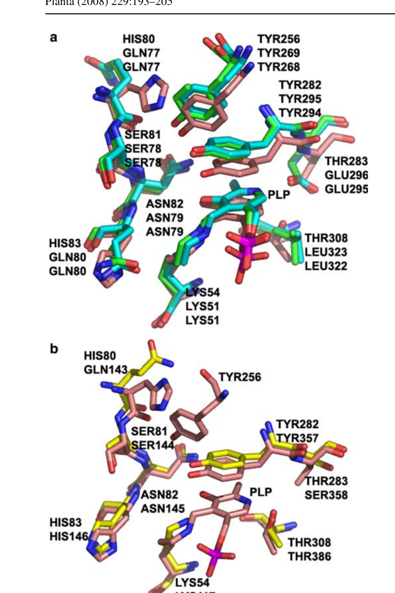
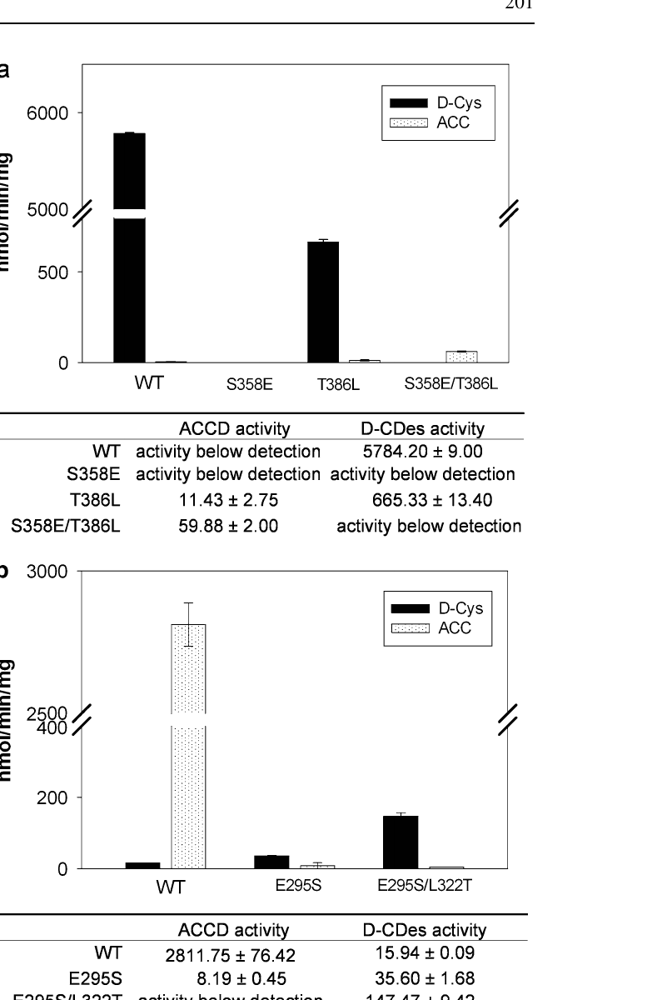
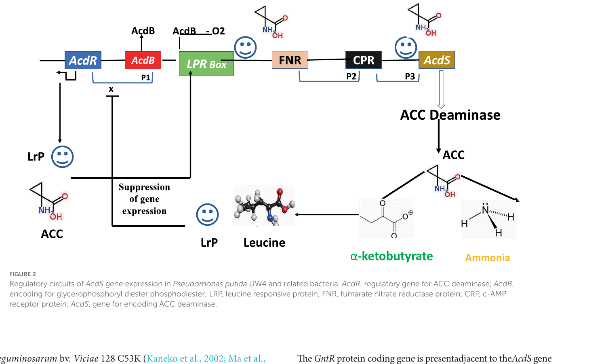

Summary map
Mutations cluster in five functional positions of the active site. UW4 residue numbering throughout; H. saturnus yeast equivalents in italics.
K51
PLP Schiff base
Y294
catalytic nucleophile
Y268
charge relay
S78
carboxylate H-bond
E295
PLP N1 partner / specificity
G44
substrate gate
L322
PLP packing / specificity
Characterised mutants
| Mutant | Organism | kcat (vs WT) | Km | Phenotype | Reference |
|---|---|---|---|---|---|
| G44D | P. putida UW4 | ~0 % | no turnover up to 40 mM ACC | Substrate-gate closed. CD/UV-Vis/Tm identical to WT; loop D39–N50 modelled to block ACC entry. | Hontzeas 2004 |
| D44G (back) | P. putida UW4 | 100 % | ~3.4 mM | Full activity restored — confirms gating role. | Hontzeas 2004 |
| K51T | H. saturnus | 0 % | — | No ACC turnover. Trapped external aldimine (PDB 1J0D); enabled mechanistic snapshot. | Ose 2003 |
| K51A | P. sp. ACP | 0 % | — | Loss of Schiff base. λmax shifts to 330 / 425 nm. | Yao 2000 (cited in Ose) |
| S78A | P. sp. ACP | ~0 % | — | Inactive — confirms Ser78 catalytic / anchoring role. | Karthikeyan 2004 |
| Y268F | P. sp. ACP | ~1.7 % (kcat 1.2 → 70 min⁻¹) | 1.97 mM (≈ WT) | Loss of charge-relay → Tyr294 stays protonated → drastic kcat collapse. | Karthikeyan 2004 |
| Y268F (mech) | P. sp. ACP | kcat = 0.028 s⁻¹ (~2 %) | — | pH-rate profile: pK′ shifts to 8.7; pK3 = 7.79. | Thibodeaux 2011 |
| Y269F | H. saturnus | ~10 % | — | Yeast equivalent of Y268F; milder effect. | Ose 2003 |
| Y294F | P. sp. ACP | 0 % | — | No ACC consumption after 24 h. Removes the catalytic nucleophile entirely. | Thibodeaux 2011; Karthikeyan 2004 |
| Y295F | H. saturnus | 0 % | — | Trapped non-covalent ACC complex (PDB 1J0E); internal aldimine retained. | Ose 2003 |
| E295D | P. sp. ACP | ~10 % (kcat 0.132 s⁻¹) | — | Slightly shorter side chain weakens PLP-N1 ion pair; kcat/Km ~2 × 10³ M⁻¹s⁻¹. | Thibodeaux 2011 |
| E295S | P. putida UW4 | ~0.3 % (8.2 vs 2811 nmol/min/mg) | — | Loss of ACCD; small (~2×) gain of D-CDes activity (35.6 vs 16 nmol/min/mg). | Todorovic 2008 |
| E295S / L322T | P. putida UW4 | undetectable ACCD | — | Interconversion: ~10× gain of D-cysteine desulfhydrase (147 vs 16 nmol/min/mg). Switches enzyme class. | Todorovic 2008 |
| E296Q | H. saturnus | 0 % | — | Yeast equivalent of E295Q — fully inactive. | Ose 2003 |
| S358E / T386L | Tomato D-CDes | 59.9 vs <detection nmol/min/mg | — | Reciprocal interconversion: tomato D-cysteine desulfhydrase gains ACCD activity (>50×). D-CDes activity lost. | Todorovic 2008 |
| T386L (single) | Tomato D-CDes | trace ACCD (11.4 nmol/min/mg) | — | ~11.5 % WT D-CDes retained; small ACCD gained — single residue is insufficient. | Todorovic 2008 |
| S358E (single) | Tomato D-CDes | 0 % | — | Loses both activities — single substitution disrupts cofactor electrostatics. | Todorovic 2008 |
Specificity-switch double mutation
The cleanest demonstration of how two residues control reaction outcome:
| Enzyme | Position A | Position B | ACCD activity | D-CDes activity |
|---|---|---|---|---|
| UW4 WT (ACCD) | Glu295 | Leu322 | 2811 ± 76 | 16 ± 0.1 |
| UW4 E295S/L322T | Ser | Thr | < detection | 147 ± 9 |
| Tomato D-CDes WT | Ser358 | Thr386 | < detection | 5784 ± 9 |
| Tomato S358E/T386L | Glu | Leu | 59.9 ± 2.0 | < detection |
Specific activities in nmol·min⁻¹·mg⁻¹.


Engineering principle. The Glu↔Ser swap tunes the PLP pyridinium-N
partner (carboxylate vs hydroxyl), while the Leu↔Thr swap repositions the same residue.
Together they redirect the PLP-stabilised carbanion toward C–C cleavage (ACC) or
β-elimination (D-Cys → pyruvate + NH₃ + H₂S). A two-residue toggle therefore selects
between two distinct EC classes.
Take-aways for engineering
- Hard kills: K51, S78, Y294, E295 — any non-conservative substitution wipes activity.
- Tunable: Y268 (charge relay) gives partial activity for fine-tuning rate.
- Specificity dial: E295 + L322 together control ACCD vs D-CDes choice.
- Gating dial: G44 sits at the substrate-entry loop — could be exploited for substrate-channel engineering.
- Cofactor anchor: Lys51 is the canonical PLP attachment site; substitutions trap intermediates for structural studies but are catalytically dead.
